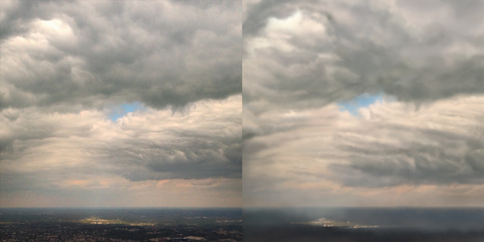
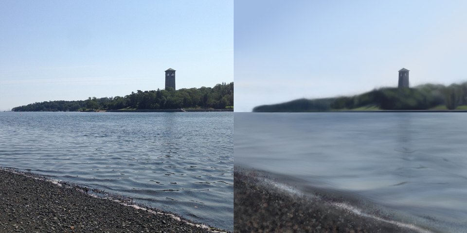
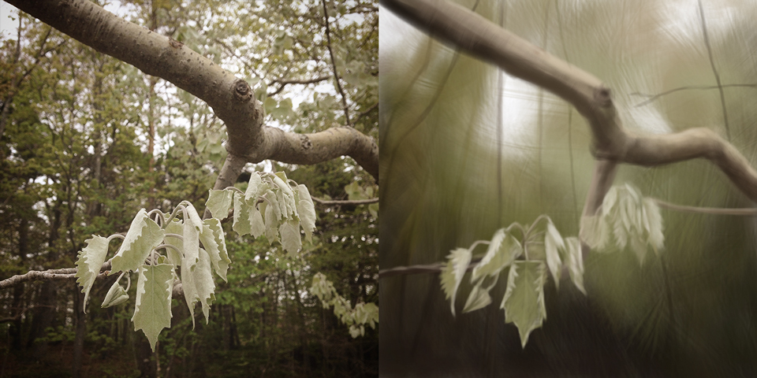

August 2015
Color and Light
Dane Aleksander—wildlife painter in Halifax, Nova Scotia.
I started a Schoolism subscription with the course titled Designing with Color and Light by Nathan Fowkes. This is part of a goal to get in the habit of painting (digitally or otherwise) everyday. I am happy to share a collection of color studies from week one of class.
All paintings were created in Adobe Photoshop. All photographs were taken on an Apple iPhone.
Fall Woods (digital painting, 2015)
Shine On… (digital painting, 2015)
Halifax Dingle (digital painting, 2015)
New Leaves (digital painting, 2015)
“A meaningful repetition of elements can give a beautiful, harmonious effect to a busy, contrasting image. It is one way to take all the chaos and bring it under control and it actually can become quite poetic.” — Nathan Fowkes, Designing with Color and Light
Continue to Week 2: Summer